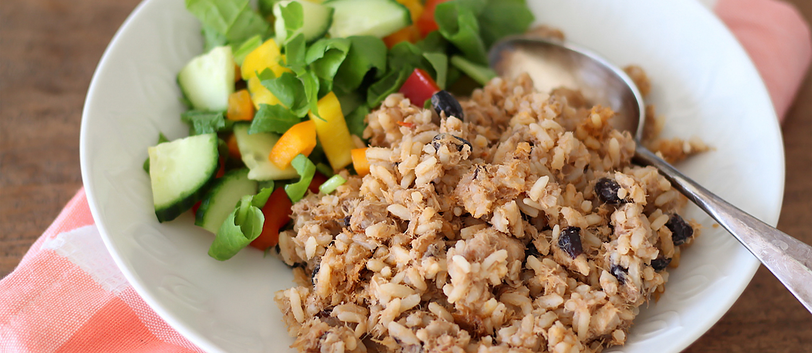

Recepten Internationale Gerechten

Ingredienten
- 600 g rijst
- masoesa poeder
- 2 eetlepels gedroogde garnalen
- 200 g grof gesneden spitskool
- 2 tenen knoflook
- 1 grote tomaat
- 4 eetlepels tomatenpuree
- 1 madam Jeanette peper
- blikje kokosmelk
- Zout of maggiblokjes naar smaak
- 100 g gerookte vis
- 8 stukken vis
- Olie om in te bakken/braden
Bereiding
- Oven voorverwarmen op 220 graden.
- Fruit de ui, knoflook samen met de tomaat en de tomaten puree.
- Voeg de geweekte garnalen en de gerookte vis (of zoutvlees) toe, voor de kip variant voeg ook
de kipstukken toe en bak het goed door.
- Daarna goed omscheppen en water toevoegen (ongeveer 3 glazen) en ongeveer 5 minuten laten koken.
- De gewassen rijst, de kokosmelk, masoesapoeder toevoegen en laten koken tot het vocht is verdampt.
- De gesneden kool op de rijst leggen en omscheppen.
- De pan met een natte, schone theedoek bedekken en dan de deksel erop plaatsen.
- De pan in de voorverwarmde oven nog een half uur laten stomen.
- Na de stoomtijd de pan uit de oven halen, voorzichtig de peper verwijderen.